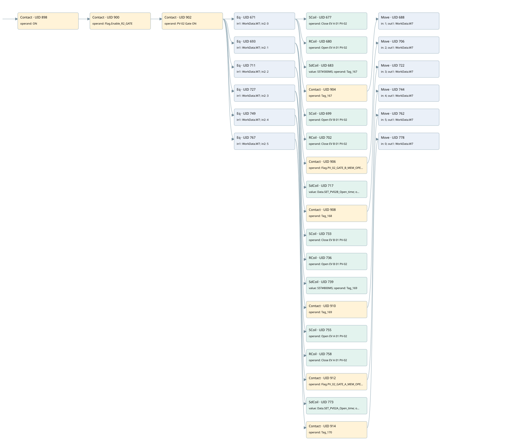

r1 gate loop pv-02
r1 scraps gate 2 · 검색 색인 순서 8 · 원본 내부 NID 추정 6
백업 PLF 원본의 2832770 바이트 위치에서 복원한 XML. 검색 문서 1918의 객체 키 16102200e311000000000000와 연결했다. 이름 해석 49/49개. 남은 RefId는 상수 또는 미해석 참조다.
연결 구조 다시 그리기
원본 Part/PCon/Wire를 이용한 연결도다. TIA 화면의 래더 배치 또는 실행 결과를 재현한 그림은 아니다. 핀 연결은 아래 표와 원본 XML을 기준으로 읽는다. 노드 위에 마우스를 두면 피연산자 이름을 볼 수 있다.

접점·코일·블록과 피연산자
| Part UID | Gate | Negated 핀 | 연결 피연산자 |
|---|---|---|---|
| 898 | Contact | operand = ON | |
| 900 | Contact | operand = Flag.Enable_R2_GATE | |
| 902 | Contact | operand = PV-02 Gate ON | |
| 671 | Eq | in1 = WorkData.W7; in2 = 0 | |
| 677 | SCoil | operand = Close EV A 01 PV-02 | |
| 680 | RCoil | operand = Open EV A 01 PV-02 | |
| 683 | SdCoil | value = S5T#300MS; operand = Tag_167 | |
| 904 | Contact | operand = Tag_167 | |
| 688 | Move | in = 1; out1 = WorkData.W7 | |
| 693 | Eq | in1 = WorkData.W7; in2 = 1 | |
| 699 | SCoil | operand = Open EV B 01 PV-02 | |
| 702 | RCoil | operand = Close EV B 01 PV-02 | |
| 906 | Contact | operand = Flag.PV_02_GATE_B_MEM_OPEN | |
| 706 | Move | in = 2; out1 = WorkData.W7 | |
| 711 | Eq | in1 = WorkData.W7; in2 = 2 | |
| 717 | SdCoil | value = Data.SET_PV02B_Open_time; operand = Tag_168 | |
| 908 | Contact | operand = Tag_168 | |
| 722 | Move | in = 3; out1 = WorkData.W7 | |
| 727 | Eq | in1 = WorkData.W7; in2 = 3 | |
| 733 | SCoil | operand = Close EV B 01 PV-02 | |
| 736 | RCoil | operand = Open EV B 01 PV-02 | |
| 739 | SdCoil | value = S5T#800MS; operand = Tag_169 | |
| 910 | Contact | operand = Tag_169 | |
| 744 | Move | in = 4; out1 = WorkData.W7 | |
| 749 | Eq | in1 = WorkData.W7; in2 = 4 | |
| 755 | SCoil | operand = Open EV A 01 PV-02 | |
| 758 | RCoil | operand = Close EV A 01 PV-02 | |
| 912 | Contact | operand = Flag.PV_02_GATE_A_MEM_OPEN | |
| 762 | Move | in = 5; out1 = WorkData.W7 | |
| 767 | Eq | in1 = WorkData.W7; in2 = 5 | |
| 773 | SdCoil | value = Data.SET_PV02A_Open_time; operand = Tag_170 | |
| 914 | Contact | operand = Tag_170 | |
| 778 | Move | in = 0; out1 = WorkData.W7 |
접점 경로를 펼친 조건식
Contact·O/A·비교기의 원본 연결을 읽기 쉽게 펼친 보조 해석이다. POWER는 전원 레일 시작을 뜻한다. 호출 블록·에지·타이머의 내부 동작과 다중 쓰기 순서는 이 표로 실행 검증하지 않았다. 미해석 핀과 RefId는 원문 연결표에서 확인한다.
| UID | 동작 | 대상 | 원본 접점 경로 | 내용 |
|---|---|---|---|---|
| 677 | SCoil | Close EV A 01 PV-02 | (((ON AND Flag.Enable_R2_GATE) AND PV-02 Gate ON) AND [WorkData.W7 = 0]) | 조건 성립 시 Set |
| 680 | RCoil | Open EV A 01 PV-02 | (((ON AND Flag.Enable_R2_GATE) AND PV-02 Gate ON) AND [WorkData.W7 = 0]) | 조건 성립 시 Reset |
| 683 | SdCoil | Tag_167 | (((ON AND Flag.Enable_R2_GATE) AND PV-02 Gate ON) AND [WorkData.W7 = 0]) | 시간 동작 SdCoil; 타이머 의미 추가 확인 / 시간 인자 S5T#300MS |
| 688 | Move | WorkData.W7 | ((((ON AND Flag.Enable_R2_GATE) AND PV-02 Gate ON) AND [WorkData.W7 = 0]) AND Tag_167) | Move 입력 1 |
| 699 | SCoil | Open EV B 01 PV-02 | (((ON AND Flag.Enable_R2_GATE) AND PV-02 Gate ON) AND [WorkData.W7 = 1]) | 조건 성립 시 Set |
| 702 | RCoil | Close EV B 01 PV-02 | (((ON AND Flag.Enable_R2_GATE) AND PV-02 Gate ON) AND [WorkData.W7 = 1]) | 조건 성립 시 Reset |
| 706 | Move | WorkData.W7 | ((((ON AND Flag.Enable_R2_GATE) AND PV-02 Gate ON) AND [WorkData.W7 = 1]) AND Flag.PV_02_GATE_B_MEM_OPEN) | Move 입력 2 |
| 717 | SdCoil | Tag_168 | (((ON AND Flag.Enable_R2_GATE) AND PV-02 Gate ON) AND [WorkData.W7 = 2]) | 시간 동작 SdCoil; 타이머 의미 추가 확인 / 시간 인자 Data.SET_PV02B_Open_time |
| 722 | Move | WorkData.W7 | ((((ON AND Flag.Enable_R2_GATE) AND PV-02 Gate ON) AND [WorkData.W7 = 2]) AND Tag_168) | Move 입력 3 |
| 733 | SCoil | Close EV B 01 PV-02 | (((ON AND Flag.Enable_R2_GATE) AND PV-02 Gate ON) AND [WorkData.W7 = 3]) | 조건 성립 시 Set |
| 736 | RCoil | Open EV B 01 PV-02 | (((ON AND Flag.Enable_R2_GATE) AND PV-02 Gate ON) AND [WorkData.W7 = 3]) | 조건 성립 시 Reset |
| 739 | SdCoil | Tag_169 | (((ON AND Flag.Enable_R2_GATE) AND PV-02 Gate ON) AND [WorkData.W7 = 3]) | 시간 동작 SdCoil; 타이머 의미 추가 확인 / 시간 인자 S5T#800MS |
| 744 | Move | WorkData.W7 | ((((ON AND Flag.Enable_R2_GATE) AND PV-02 Gate ON) AND [WorkData.W7 = 3]) AND Tag_169) | Move 입력 4 |
| 755 | SCoil | Open EV A 01 PV-02 | (((ON AND Flag.Enable_R2_GATE) AND PV-02 Gate ON) AND [WorkData.W7 = 4]) | 조건 성립 시 Set |
| 758 | RCoil | Close EV A 01 PV-02 | (((ON AND Flag.Enable_R2_GATE) AND PV-02 Gate ON) AND [WorkData.W7 = 4]) | 조건 성립 시 Reset |
| 762 | Move | WorkData.W7 | ((((ON AND Flag.Enable_R2_GATE) AND PV-02 Gate ON) AND [WorkData.W7 = 4]) AND Flag.PV_02_GATE_A_MEM_OPEN) | Move 입력 5 |
| 773 | SdCoil | Tag_170 | (((ON AND Flag.Enable_R2_GATE) AND PV-02 Gate ON) AND [WorkData.W7 = 5]) | 시간 동작 SdCoil; 타이머 의미 추가 확인 / 시간 인자 Data.SET_PV02A_Open_time |
| 778 | Move | WorkData.W7 | ((((ON AND Flag.Enable_R2_GATE) AND PV-02 Gate ON) AND [WorkData.W7 = 5]) AND Tag_170) | Move 입력 0 |
원본 배선 연결
| Wire UID | 동일 Wire 연결 끝점 |
|---|---|
| 916 | Powerrail {} ↔ Part 898.in |
| 830 | ORef 781 (ON) ↔ Part 898.operand |
| 899 | Part 898.out ↔ Part 900.in |
| 831 | ORef 782 (Flag.Enable_R2_GATE) ↔ Part 900.operand |
| 901 | Part 900.out ↔ Part 902.in |
| 832 | ORef 783 (PV-02 Gate ON) ↔ Part 902.operand |
| 903 | Part 902.out ↔ Part 671.pre ↔ Part 693.pre ↔ Part 711.pre ↔ Part 727.pre ↔ Part 749.pre ↔ Part 767.pre |
| 833 | ORef 784 (WorkData.W7) ↔ Part 671.in1 |
| 834 | ORef 785 (0) ↔ Part 671.in2 |
| 835 | Part 671.out ↔ Part 677.in ↔ Part 680.in ↔ Part 683.in ↔ Part 904.in |
| 836 | ORef 786 (Close EV A 01 PV-02) ↔ Part 677.operand |
| 837 | ORef 787 (Open EV A 01 PV-02) ↔ Part 680.operand |
| 838 | ORef 788 (S5T#300MS) ↔ Part 683.value |
| 839 | ORef 789 (Tag_167) ↔ Part 683.operand |
| 840 | ORef 790 (Tag_167) ↔ Part 904.operand |
| 905 | Part 904.out ↔ Part 688.en |
| 842 | ORef 791 (1) ↔ Part 688.in |
| 843 | Part 688.out1 ↔ ORef 792 (WorkData.W7) |
| 845 | ORef 793 (WorkData.W7) ↔ Part 693.in1 |
| 846 | ORef 794 (1) ↔ Part 693.in2 |
| 847 | Part 693.out ↔ Part 699.in ↔ Part 702.in ↔ Part 906.in |
| 848 | ORef 795 (Open EV B 01 PV-02) ↔ Part 699.operand |
| 849 | ORef 796 (Close EV B 01 PV-02) ↔ Part 702.operand |
| 850 | ORef 797 (Flag.PV_02_GATE_B_MEM_OPEN) ↔ Part 906.operand |
| 907 | Part 906.out ↔ Part 706.en |
| 852 | ORef 798 (2) ↔ Part 706.in |
| 853 | Part 706.out1 ↔ ORef 799 (WorkData.W7) |
| 855 | ORef 800 (WorkData.W7) ↔ Part 711.in1 |
| 856 | ORef 801 (2) ↔ Part 711.in2 |
| 857 | Part 711.out ↔ Part 717.in ↔ Part 908.in |
| 858 | ORef 802 (Data.SET_PV02B_Open_time) ↔ Part 717.value |
| 859 | ORef 803 (Tag_168) ↔ Part 717.operand |
| 860 | ORef 804 (Tag_168) ↔ Part 908.operand |
| 909 | Part 908.out ↔ Part 722.en |
| 862 | ORef 805 (3) ↔ Part 722.in |
| 863 | Part 722.out1 ↔ ORef 806 (WorkData.W7) |
| 865 | ORef 807 (WorkData.W7) ↔ Part 727.in1 |
| 866 | ORef 808 (3) ↔ Part 727.in2 |
| 867 | Part 727.out ↔ Part 733.in ↔ Part 736.in ↔ Part 739.in ↔ Part 910.in |
| 868 | ORef 809 (Close EV B 01 PV-02) ↔ Part 733.operand |
| 869 | ORef 810 (Open EV B 01 PV-02) ↔ Part 736.operand |
| 870 | ORef 811 (S5T#800MS) ↔ Part 739.value |
| 871 | ORef 812 (Tag_169) ↔ Part 739.operand |
| 872 | ORef 813 (Tag_169) ↔ Part 910.operand |
| 911 | Part 910.out ↔ Part 744.en |
| 874 | ORef 814 (4) ↔ Part 744.in |
| 875 | Part 744.out1 ↔ ORef 815 (WorkData.W7) |
| 877 | ORef 816 (WorkData.W7) ↔ Part 749.in1 |
| 878 | ORef 817 (4) ↔ Part 749.in2 |
| 879 | Part 749.out ↔ Part 755.in ↔ Part 758.in ↔ Part 912.in |
| 880 | ORef 818 (Open EV A 01 PV-02) ↔ Part 755.operand |
| 881 | ORef 819 (Close EV A 01 PV-02) ↔ Part 758.operand |
| 882 | ORef 820 (Flag.PV_02_GATE_A_MEM_OPEN) ↔ Part 912.operand |
| 913 | Part 912.out ↔ Part 762.en |
| 884 | ORef 821 (5) ↔ Part 762.in |
| 885 | Part 762.out1 ↔ ORef 822 (WorkData.W7) |
| 887 | ORef 823 (WorkData.W7) ↔ Part 767.in1 |
| 888 | ORef 824 (5) ↔ Part 767.in2 |
| 889 | Part 767.out ↔ Part 773.in ↔ Part 914.in |
| 890 | ORef 825 (Data.SET_PV02A_Open_time) ↔ Part 773.value |
| 891 | ORef 826 (Tag_170) ↔ Part 773.operand |
| 892 | ORef 827 (Tag_170) ↔ Part 914.operand |
| 915 | Part 914.out ↔ Part 778.en |
| 894 | ORef 828 (0) ↔ Part 778.in |
| 895 | Part 778.out1 ↔ ORef 829 (WorkData.W7) |
식별자 해석 근거 49개
| ORef UID | RefId | 이름 | IdentXmlPart 파일 | 해석 방법 |
|---|---|---|---|---|
| 781 | 1 | ON | 0607-IdentXmlPart.xml | UID/RID + search-text + NID agreement |
| 782 | 52 | Flag.Enable_R2_GATE | 0609-IdentXmlPart.xml | UID/RID + search-text + NID agreement |
| 783 | 57 | PV-02 Gate ON | 0607-IdentXmlPart.xml | UID/RID + search-text + NID agreement |
| 784 | 60 | WorkData.W7 | 0609-IdentXmlPart.xml | UID/RID + search-text + NID agreement |
| 785 | 16 | 0 | 0610-IdentXmlPart.xml | literal candidate: UID/RID/NID + nearby named declarations + search-text agreement |
| 786 | 63 | Close EV A 01 PV-02 | 0607-IdentXmlPart.xml | UID/RID + search-text + NID agreement |
| 787 | 61 | Open EV A 01 PV-02 | 0607-IdentXmlPart.xml | UID/RID + search-text + NID agreement |
| 789 | 66 | Tag_167 | 0607-IdentXmlPart.xml | UID/RID + search-text + NID agreement |
| 788 | 65 | S5T#300MS | 0610-IdentXmlPart.xml | literal candidate: UID/RID/NID + nearby named declarations + search-text agreement |
| 790 | 66 | Tag_167 | 0607-IdentXmlPart.xml | UID/RID + search-text + NID agreement |
| 791 | 27 | 1 | 0610-IdentXmlPart.xml | literal candidate: UID/RID/NID + nearby named declarations + search-text agreement |
| 792 | 60 | WorkData.W7 | 0609-IdentXmlPart.xml | UID/RID + search-text + NID agreement |
| 793 | 60 | WorkData.W7 | 0609-IdentXmlPart.xml | UID/RID + search-text + NID agreement |
| 794 | 27 | 1 | 0610-IdentXmlPart.xml | literal candidate: UID/RID/NID + nearby named declarations + search-text agreement |
| 795 | 62 | Open EV B 01 PV-02 | 0607-IdentXmlPart.xml | UID/RID + search-text + NID agreement |
| 796 | 64 | Close EV B 01 PV-02 | 0607-IdentXmlPart.xml | UID/RID + search-text + NID agreement |
| 797 | 56 | Flag.PV_02_GATE_B_MEM_OPEN | 0609-IdentXmlPart.xml | UID/RID + search-text + NID agreement |
| 798 | 29 | 2 | 0610-IdentXmlPart.xml | literal candidate: UID/RID/NID + nearby named declarations + search-text agreement |
| 799 | 60 | WorkData.W7 | 0609-IdentXmlPart.xml | UID/RID + search-text + NID agreement |
| 800 | 60 | WorkData.W7 | 0609-IdentXmlPart.xml | UID/RID + search-text + NID agreement |
| 801 | 29 | 2 | 0610-IdentXmlPart.xml | literal candidate: UID/RID/NID + nearby named declarations + search-text agreement |
| 803 | 70 | Tag_168 | 0607-IdentXmlPart.xml | UID/RID + search-text + NID agreement |
| 802 | 113 | Data.SET_PV02B_Open_time | 0609-IdentXmlPart.xml | UID/RID + search-text + NID agreement |
| 804 | 70 | Tag_168 | 0607-IdentXmlPart.xml | UID/RID + search-text + NID agreement |
| 805 | 34 | 3 | 0610-IdentXmlPart.xml | literal candidate: UID/RID/NID + nearby named declarations + search-text agreement |
| 806 | 60 | WorkData.W7 | 0609-IdentXmlPart.xml | UID/RID + search-text + NID agreement |
| 807 | 60 | WorkData.W7 | 0609-IdentXmlPart.xml | UID/RID + search-text + NID agreement |
| 808 | 34 | 3 | 0610-IdentXmlPart.xml | literal candidate: UID/RID/NID + nearby named declarations + search-text agreement |
| 809 | 64 | Close EV B 01 PV-02 | 0607-IdentXmlPart.xml | UID/RID + search-text + NID agreement |
| 810 | 62 | Open EV B 01 PV-02 | 0607-IdentXmlPart.xml | UID/RID + search-text + NID agreement |
| 812 | 73 | Tag_169 | 0607-IdentXmlPart.xml | UID/RID + search-text + NID agreement |
| 811 | 72 | S5T#800MS | 0610-IdentXmlPart.xml | literal candidate: UID/RID/NID + nearby named declarations + search-text agreement |
| 813 | 73 | Tag_169 | 0607-IdentXmlPart.xml | UID/RID + search-text + NID agreement |
| 814 | 37 | 4 | 0610-IdentXmlPart.xml | literal candidate: UID/RID/NID + nearby named declarations + search-text agreement |
| 815 | 60 | WorkData.W7 | 0609-IdentXmlPart.xml | UID/RID + search-text + NID agreement |
| 816 | 60 | WorkData.W7 | 0609-IdentXmlPart.xml | UID/RID + search-text + NID agreement |
| 817 | 37 | 4 | 0610-IdentXmlPart.xml | literal candidate: UID/RID/NID + nearby named declarations + search-text agreement |
| 818 | 61 | Open EV A 01 PV-02 | 0607-IdentXmlPart.xml | UID/RID + search-text + NID agreement |
| 819 | 63 | Close EV A 01 PV-02 | 0607-IdentXmlPart.xml | UID/RID + search-text + NID agreement |
| 820 | 55 | Flag.PV_02_GATE_A_MEM_OPEN | 0609-IdentXmlPart.xml | UID/RID + search-text + NID agreement |
| 821 | 39 | 5 | 0610-IdentXmlPart.xml | literal candidate: UID/RID/NID + nearby named declarations + search-text agreement |
| 822 | 60 | WorkData.W7 | 0609-IdentXmlPart.xml | UID/RID + search-text + NID agreement |
| 823 | 60 | WorkData.W7 | 0609-IdentXmlPart.xml | UID/RID + search-text + NID agreement |
| 824 | 39 | 5 | 0610-IdentXmlPart.xml | literal candidate: UID/RID/NID + nearby named declarations + search-text agreement |
| 826 | 77 | Tag_170 | 0607-IdentXmlPart.xml | UID/RID + search-text + NID agreement |
| 825 | 76 | Data.SET_PV02A_Open_time | 0609-IdentXmlPart.xml | UID/RID + search-text + NID agreement |
| 827 | 77 | Tag_170 | 0607-IdentXmlPart.xml | UID/RID + search-text + NID agreement |
| 828 | 16 | 0 | 0610-IdentXmlPart.xml | literal candidate: UID/RID/NID + nearby named declarations + search-text agreement |
| 829 | 60 | WorkData.W7 | 0609-IdentXmlPart.xml | UID/RID + search-text + NID agreement |
검색 코드 보조 자료
참조 명칭을 찾기 위한 자료이며 실행 순서나 AND/OR 관계는 위 연결표로 확인한다.
"on" "flag".enable_r2_gate "pv-02 gate on" "workdata".w7 0 "close ev a 01 pv-02" "workdata".w7 1 "open ev b 01 pv-02" "close ev b 01 pv-02" "flag".pv_02_gate_b_mem_open move 2 "workdata".w7 "workdata".w7 2 "tag_168" "data".set_pv02b_open_time "tag_168" move 3 "workdata".w7 "workdata".w7 3 "close ev b 01 pv-02" "open ev b 01 pv-02" "tag_169" s5t#800ms "tag_169" move 4 "workdata".w7 "workdata".w7 4 "open ev a 01 pv-02" "close ev a 01 pv-02" "flag".pv_02_gate_a_mem_open move 5 "workdata".w7 "workdata".w7 5 "tag_170" "data".set_pv02a_open_time "tag_170" move 0 "workdata".w7 "open ev a 01 pv-02" "tag_167" s5t#300ms "tag_167" move 1 "workdata".w7